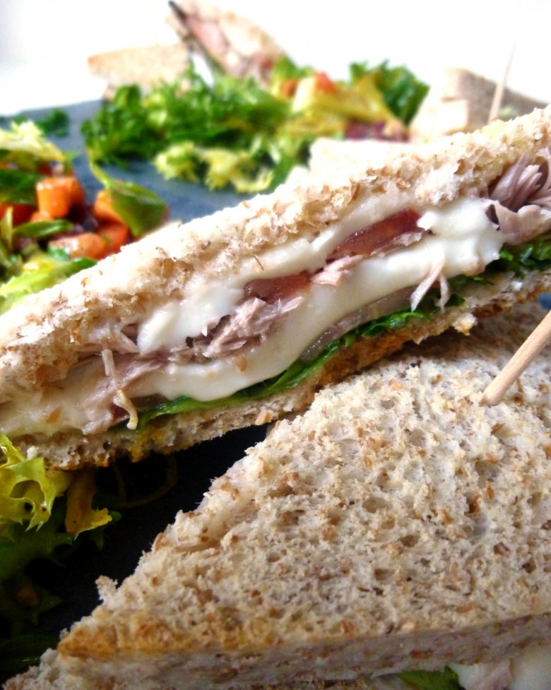
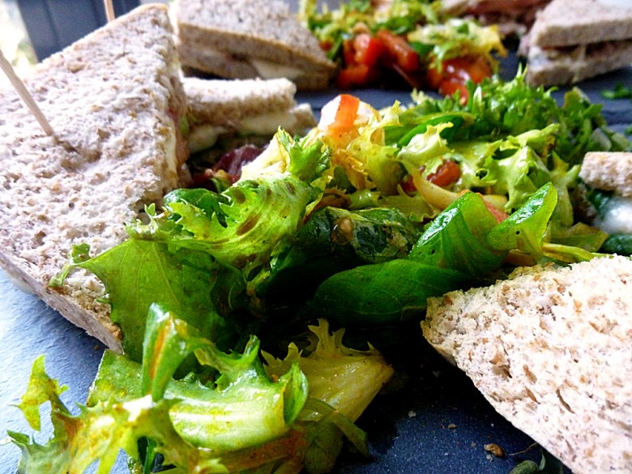

Sandwich croque thon mozza

Coucou tout le monde!! Aujourd’hui je vous propose une recette toute simple surtout si vous n’avez pas trop de temps pour cuisiner : le sandwich croque thon mozza!
Croque monsieur, bagel , burger , club sandwich, bref nous on adore tout ça ! Voila quelques temps que je fais des clubs sandwichs au thon et c’est à toujours un vrai délice! Je ne sais pas pourquoi j’appelle ça un « croque thon » mais à la maison c’est comme ça, alors ce sera comme ça sur le blog aussi 🙂
Cette recette n’a rien, mais alors rien de compliquée ! Elle se prépare très rapidement et accompagnée d’une petite salade verte, c’est le top le soir quand on a pas trop le temps de passer derrière les fourneaux !
Du thon, de la mozza , des tomates fraiches un peu de salade, une touche d’assaisonnement et le tour est joué!
Je vous laisse découvrir la recette et j’espère qu’elle vous plaira!
Ingrédients
- Thon naturel - 280 g
- Pains de mie (complet pour moi) - 10 tranches
- Mozzarella - 250 g (2 boules)
- Tomates - 2
- Mesclun ou roquette - quelques feuilles
- Huile d'olive
- Herbes de Provence
Instructions
- Verser un filet d'huile d'olive sur les tranches de pain de mie
- Saupoudrer d'un peu d'herbes de Provence
- Déposer un lit de salade sur le pain (tranches inférieures)
- Couper les tomates et la mozza en fines rondelles (j'aime quand les tomates sont très fines)
- Déposer deux rondelles de tomates sur le lit de salade
- Poursuivre avec des morceaux de mozzarella
- Rajouter du thon émietté
- Pour les plus gourmands, déposer une autre couche de mozzarella sur le thon
- Enfourner 8 min au four à 180° (ce qu'il faut c'est que la mozzarella fonde légèrement mais que la salade ne cuise pas ^^)
- Au moment de servir couper en deux dans le sens de la diagonale
- Servir avec une petite salade, une portion de frites ou encore sans rien du tout à côté car c'est déjà très bon comme cela 😉 !


Les tips de la communauté
Sandwich simple mais délicieux et facile à préparer. La mozzarella fondante fait tout le charme. Très apprécié pour sa simplicité et son goût.
Astuces
- La mozzarella fondante est la clé du succès
- Recette ultra rapide à réaliser
- Parfait pour un repas simple mais gourmand
Variantes suggérées
- Variantes possibles avec différents fromages